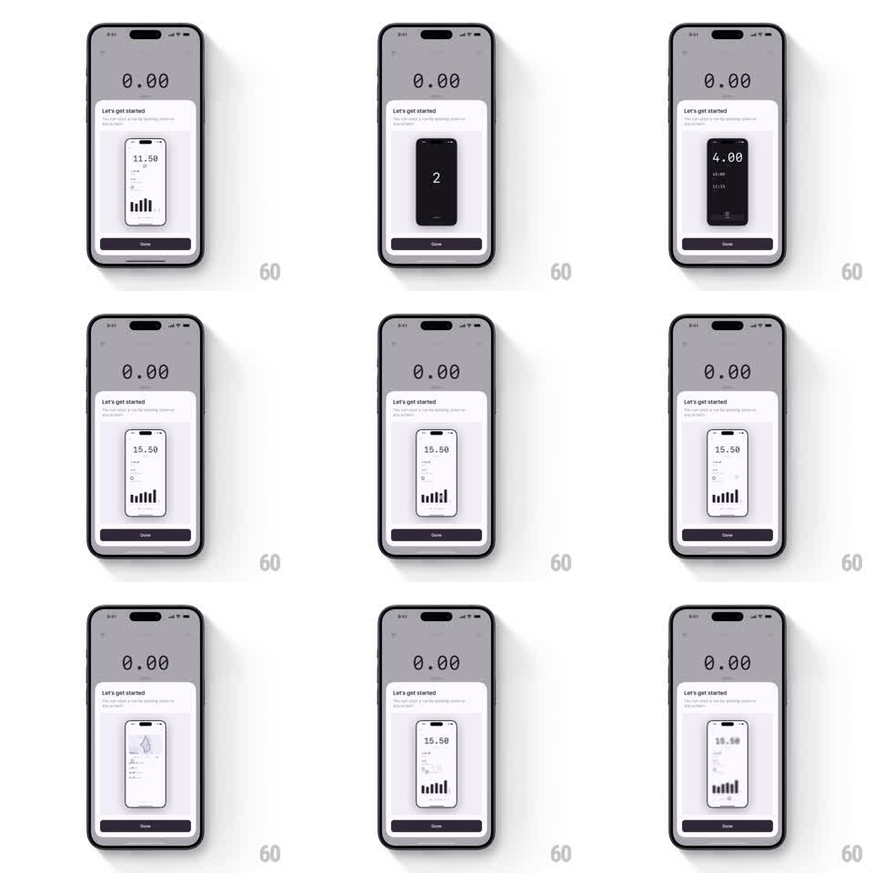

Media
Frame-by-frame

Rebuild this animation 1:1: Miles' gesture tooltip sheet - a "Let's get started" bottom sheet plays a looping phone demo of app gestures (run summary, countdown, live stats, swipe gestures), then slides away on Done to reveal the dashboard.

Rebuild this animation 1:1: Miles' gesture tooltip sheet - a "Let's get started" bottom sheet plays a looping phone demo of app gestures (run summary, countdown, live stats, swipe gestures), then slides away on Done to reveal the dashboard. ## Integration Integration: stack-agnostic spec - springs given as stiffness/damping, timed motions as duration + curve; map every value to your framework and animation library of choice. ## Scene Miles' light dashboard (big "0.00" readout) dimmed behind a bottom sheet titled "Let's get started" with the sub-line "You can start a run by pressing pause on the screen". Inside the sheet, a small phone frame loops the gesture demos: a run summary with a bar chart, the dark countdown showing "2", live stats reading "4.00", and a swipe-gesture hint. A black "Done" button caps the sheet. ## Motion spec Pattern: looping demo inside a dismissible sheet, gesture to close. - The demo phone loops its clips: each scene holds ~1.5s and crossfades to the next (300ms), endlessly repeating while the sheet is open. - The sheet itself sits at a fixed detent; the dashboard behind stays dimmed and static. - On Done, the sheet slides down off-screen (spring stiffness 340 damping 30), the dim lifting as it goes (300ms), and the dashboard takes full brightness - the "0.00" readout crisp. - Swiping the sheet down dismisses it identically, tracking the finger 1:1 with the spring finishing the exit. ## Calibration - The demo is inset inside the sheet with rounded corners - a phone-in-a-sheet, clearly a preview. - Dismissal is one continuous motion; the sheet never jumps. ## Reduced motion Demo scenes crossfade slowly; sheet fades out on Done. ## Don't miss - The demo loops - there is no end state until the user dismisses. - The dashboard behind is the real app, revealed not navigated to.